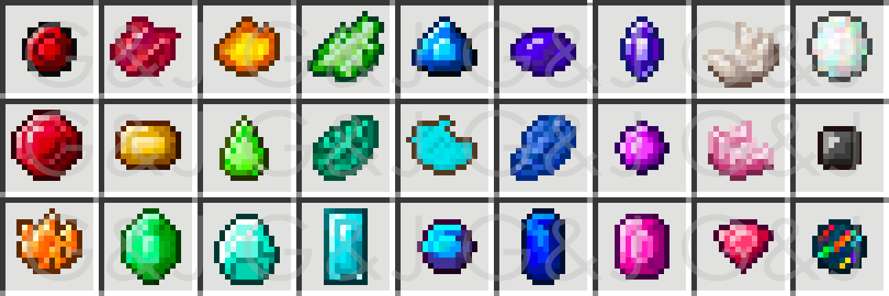
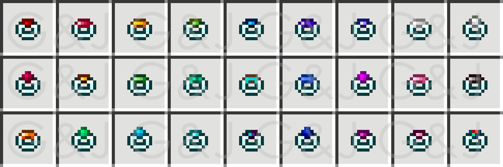
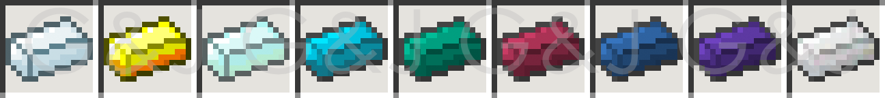

Gems & Jewels is a mod for Minecraft that add 23 new minable gems and 2 new minable metals.
Gems can be crafted into rings and other jewelry that can be used to upgrade tools and armor. Tools that are upgraded show stats on their use. EX: Swords will show the number of mobs they have slain.
Major gems can be combined with iron and coal and then smelted to created gem infused steel.
Infused steel ingots can be crafted into swords. These sword grow more powerful the more mobs they slay.